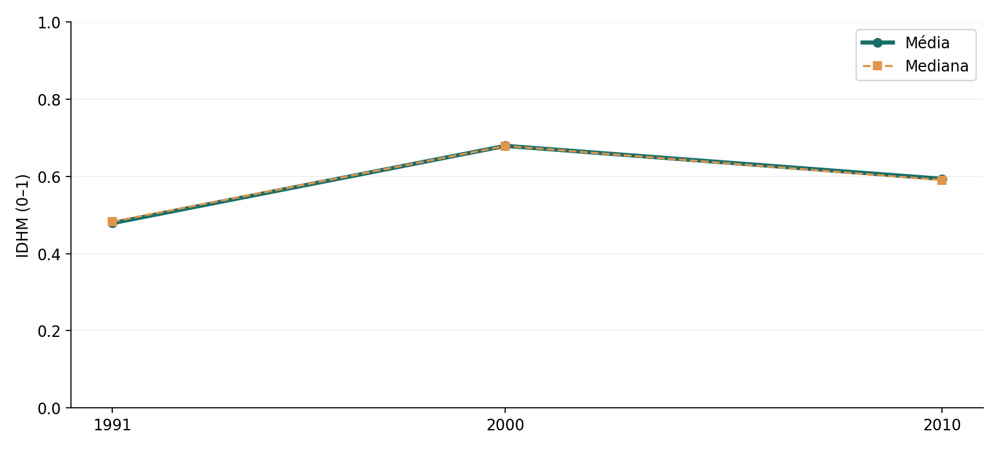
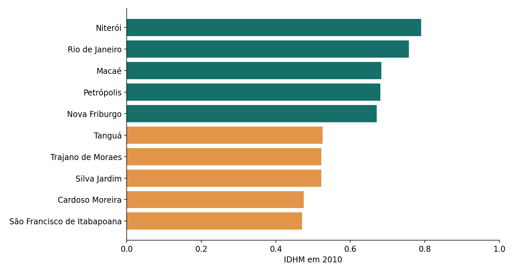
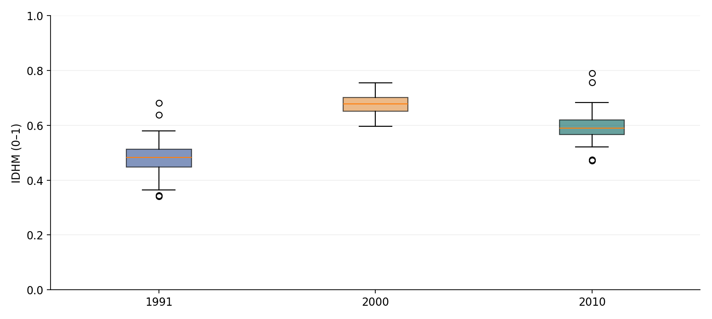
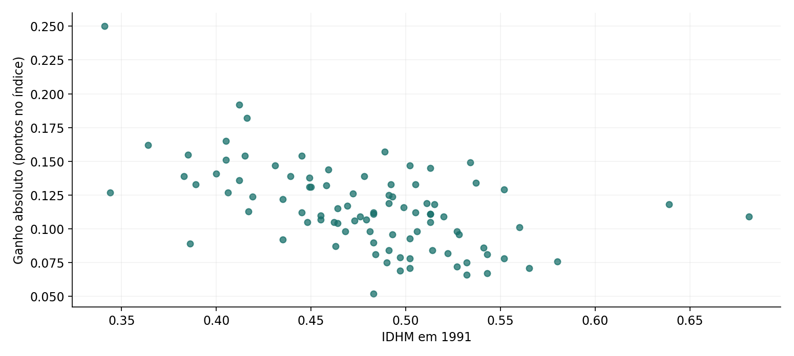

Artigo calculado com dados oficiais
Resumo
Este estudo examina a evolução do Índice de Desenvolvimento Humano Municipal (IDHM) nos municípios do Estado do Rio de Janeiro nos anos censitários de 1991, 2000 e 2010, utilizando a Tabela 1727 do portal DATA.RIO. O objetivo é descrever mudanças temporais, diferenças territoriais e a associação entre nível inicial de desenvolvimento e ganho posterior. Desenvolveu-se um pipeline reprodutível em Python para obtenção da planilha Excel original, registro de proveniência, identificação de cabeçalhos, padronização de campos, auditoria de dados faltantes e exportação de arquivos CSV e JSON. Foram aplicadas estatísticas descritivas, comparação emparelhada, distribuição por município, visualizações interativas e correlação de Spearman. O processamento identificou 92 municípios, com médias simples de IDHM de 0,479 em 1991, 0,679 em 2000 e 0,594 em 2010. Entre os 92 municípios com observações nos extremos do período, o ganho médio foi de 0,115 ponto no índice. A associação entre IDHM inicial e ganho absoluto apresentou coeficiente de Spearman de -0,54. Os achados mostram mudanças no indicador e heterogeneidade entre territórios, sem inferência causal. A análise é limitada à cobertura e à periodicidade da planilha histórica, não devendo ser interpretada como descrição da situação atual. Código, arquivos derivados e instruções de reprodução são disponibilizados segundo princípios FAIR.
Palavras-chave: IDHM; municípios fluminenses; desigualdade territorial; análise exploratória; Python; ciência aberta.
Abstract
This observational study examines Municipal Human Development Index (MHDI) data for municipalities in the State of Rio de Janeiro in 1991, 2000, and 2010, based on Table 1727 from the official DATA.RIO portal. A reproducible Python pipeline downloads the original spreadsheet, records provenance, validates and normalizes the tabular data, preserves missing values, and exports machine-readable outputs. The analysis investigates temporal trends, territorial inequality, and the association between initial MHDI and subsequent absolute gains. The dataset contains 92 municipalities; the 2010 unweighted mean MHDI was 0.594. Among 92 municipalities with paired endpoint observations, the average absolute gain was 0.115; Spearman correlation between 1991 MHDI and gain was -0.54. Descriptive statistics, interactive charts, and reproducibility instructions are provided. Municipal observations receive equal statistical weight rather than population weights. Missing observations remain null, and comparisons of absolute change use only municipalities with available endpoint values. The original data and all transformations are documented for independent validation and reuse. The analysis does not establish causality, and the historical data do not describe current development conditions.
Keywords: MHDI; Rio de Janeiro municipalities; territorial inequality; exploratory data analysis; Python; open science.
1. Introdução
O Índice de Desenvolvimento Humano Municipal (IDHM) resume três dimensões do desenvolvimento: longevidade, educação e renda. O indicador é apresentado em escala de 0 a 1 e permite analisar diferenças entre municípios, embora não substitua indicadores específicos de distribuição de renda, infraestrutura ou condições de vida. O DATA.RIO disponibiliza uma tabela histórica para 1991, 2000 e 2010 que permite investigar tendências e heterogeneidade territorial [1–2].
O objetivo do trabalho é descrever a evolução, a dispersão e a posição relativa dos municípios fluminenses, com atenção a três perguntas de pesquisa:
A análise é observacional, restrita aos anos presentes na fonte. Nenhuma correlação será interpretada como relação de causa e efeito.
2. Metodologia e pipeline de dados
2.1. Fonte e unidade de análise
A fonte primária é a Tabela 1727 do DATA.RIO: Índice de Desenvolvimento Humano (IDH), por ordem decrescente, dos Municípios do Estado do Rio de Janeiro em 1991/2000/2010 [1]. O registro analítico é o par município–ano. O processamento preserva a planilha original e converte seus valores para uma tabela longa de dados.
2.2. Extração, limpeza e validação
O programa baixa o arquivo original, registra sua assinatura SHA-256, lê as abas da planilha e identifica as colunas de município e IDHM para os três anos. Campos numéricos usam conversão explícita de vírgula decimal; municípios são normalizados apenas para auditoria de duplicidade. Valores ausentes são mantidos como nulos e não são imputados. Registros suspeitos ou layouts incompatíveis interrompem o processamento com diagnóstico, evitando conversões silenciosas.
2.3. Estatísticas e critérios
A RQ1 apresenta média e mediana simples dos IDHMs disponíveis para cada ano e a média dos ganhos emparelhados dos municípios com valores válidos em 1991 e 2010. A RQ2 compara os extremos de 2010 e a distribuição municipal (amplitude, quartis e dispersão). A RQ3 utiliza a correlação de Spearman entre IDHM inicial e ganho absoluto, calculada apenas para municípios presentes nos dois períodos. A unidade de análise é sempre o município, sem ponderação populacional.
2.4. Trecho exemplificativo do código Python
long = wide.melt(
id_vars=["municipio"],
value_vars=["idhm_1991", "idhm_2000", "idhm_2010"],
var_name="ano", value_name="idhm"
)
paired = wide.dropna(subset=["idhm_1991", "idhm_2010"])
paired["ganho"] = paired.idhm_2010 - paired.idhm_1991
rho = paired.idhm_1991.corr(paired.ganho, method="spearman")Os scripts src/etl.py, src/analysis.py e scripts/build_site.py documentam o processamento completo. Após a aquisição do arquivo original, a validação resultou em 92 municípios e 0 células de IDHM ausentes nas três datas.
3. Resultados e discussão
O IDHM médio aumentou entre os três anos observados
As médias aritméticas municipais foram 1991: 0,479; 2000: 0,679; 2010: 0,594. Entre 92 municípios com informação em 1991 e 2010, o ganho médio emparelhado foi 0,115 ponto no índice (mediana 0,112). A comparação emparelhada evita confundir mudanças com inclusão ou exclusão de municípios devido a valores faltantes.

| Ano | Municípios válidos | Média | Mediana | Desvio padrão | P90 − P10 |
|---|---|---|---|---|---|
| 1991 | 92.0 | 0,479 | 0,483 | 0,057 | 0,136 |
| 2000 | 92.0 | 0,679 | 0,679 | 0,034 | 0,088 |
| 2010 | 92.0 | 0,594 | 0,591 | 0,049 | 0,105 |
Diferenças entre municípios permanecem observáveis em 2010
O maior IDHM em 2010, na amostra analisada, foi observado em Niterói (0,790); o menor foi registrado em São Francisco de Itabapoana (0,471). A diferença entre os extremos foi de 0,319 ponto. Rankings descrevem a ordem na base, mas isoladamente não determinam causas ou necessidade relativa de políticas públicas.

O desvio padrão dos IDHMs municipais foi de 0,057 em 1991 e 0,049 em 2010. A comparação das distribuições mostra dispersão entre localidades em vez de apenas uma média agregada.

Relação entre desenvolvimento inicial e variação subsequente
A correlação de Spearman entre IDHM de 1991 e ganho absoluto até 2010 foi ρ = -0,54, indicando associação de sinal negativa nos 92 municípios com dados emparelhados. O ganho absoluto é a diferença entre os dois valores do índice, e não uma variação percentual. Mesmo diante de associação, efeitos de teto, dependência matemática entre nível inicial e mudança e outros fatores impedem interpretação causal.

As correlações são análises exploratórias e não devem ser interpretadas como convergência socioeconômica estabelecida; também seria necessário controlar a configuração territorial e mudanças metodológicas ao longo do período.
4. Conclusão
O estudo identificou aumento da média municipal do IDHM entre 1991 e 2010 no conjunto extraído do DATA.RIO. A média passou de 0,479 para 0,594, enquanto o ganho médio emparelhado foi de 0,115 ponto. Persistiram diferenças entre os municípios, evidenciadas pelos extremos e pela dispersão dos valores de 2010. A associação estimada entre situação inicial e ganho absoluto foi de ρ = -0,54, sem justificar conclusões causais.
Como limitações, destacam-se a defasagem histórica (último ano 2010), a ausência de ponderação populacional, a dependência dos dados publicados e o fato de o IDHM sintetizar dimensões heterogêneas. Pesquisas futuras podem incorporar componentes específicos de renda, educação e longevidade, acompanhar períodos posteriores e explorar a distribuição intramunicipal.
5. Disponibilidade dos dados e declaração FAIR
Os dados brutos procedem da publicação da Prefeitura da Cidade do Rio de Janeiro, disponibilizada no catálogo DATA.RIO. O script registra endereço de origem, data de aquisição e checksum SHA-256. O repositório armazena o Excel bruto, a cópia normalizada e as tabelas de resultados após o primeiro processamento.
README, autoria e referência persistente ao item do DATA.RIO.
Repositório público, publicação em GitHub Pages e fonte acessível por URL aberta.
CSV/GZ, JSON e data/data_dictionary.md documentando tipos e variáveis.
Licença de software MIT, atribuição dos dados CC BY 4.0 e dependências versionadas.
Reproduza os resultados em ambiente Python 3.11/3.12, a partir do diretório do projeto:
git clone <URL-DO-REPOSITORIO>
cd projeto-idhm-rj
python -m venv .venv
# Windows: .venv\Scripts\activate
# Linux/macOS: source .venv/bin/activate
pip install -r requirements.txt
python scripts/build_all.pyOs arquivos processados são derivados integralmente da fonte original, sem interpolação ou substituição dos dados faltantes. A configuração e a forma de obtenção do Excel estão documentadas no repositório.
6. Referências
- PREFEITURA DA CIDADE DO RIO DE JANEIRO. Índice de Desenvolvimento Humano (IDH), por ordem decrescente, dos Municípios do Estado do Rio de Janeiro em 1991/2000/2010. DATA.RIO, Tabela 1727. Disponível em: Data.Rio. Acesso em: 19 nov. 2026.
- PROGRAMA DAS NAÇÕES UNIDAS PARA O DESENVOLVIMENTO (PNUD); IPEA; FUNDAÇÃO JOÃO PINHEIRO. Atlas do Desenvolvimento Humano no Brasil. Disponível em: Atlas Brasil. Acesso em: 19 nov. 2026.
- THE PANDAS DEVELOPMENT TEAM. pandas: Python Data Analysis Library. Disponível em: pandas.pydata.org. Acesso em: 19 nov. 2026.
- PLOTLY TECHNOLOGIES INC. Plotly Python Open Source Graphing Library. Disponível em: plotly.com/python. Acesso em: 19 nov. 2026.
- WILKINSON, M. D. et al. The FAIR Guiding Principles for scientific data management and stewardship. Scientific Data, v. 3, 160018, 2016. DOI: 10.1038/sdata.2016.18.